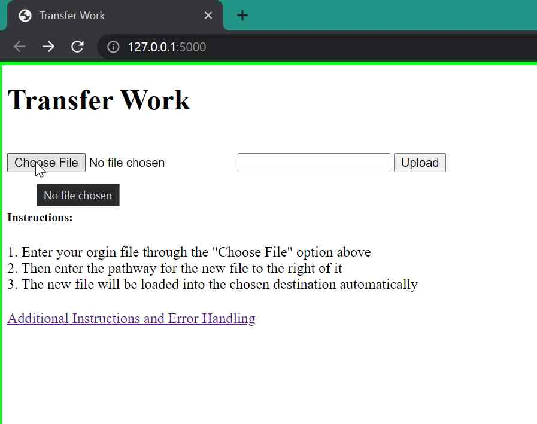

Origin File Upload
1. First click on the choose file option to specify which file will be transfered

2. Choose the file that will be used by navigating to it
- The file needs to be an approved file type (.xlsx, .xls)
3. Select the file path destination and new file name for your altered file
 - the file path needs to include the name of the file in csv format
- Example: C:\Users\username\Desktop\newfolder\alteredfile.csv